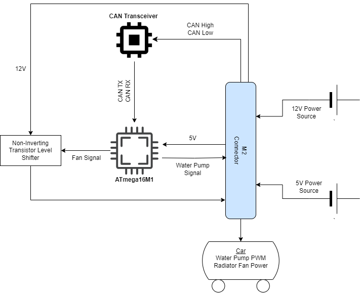
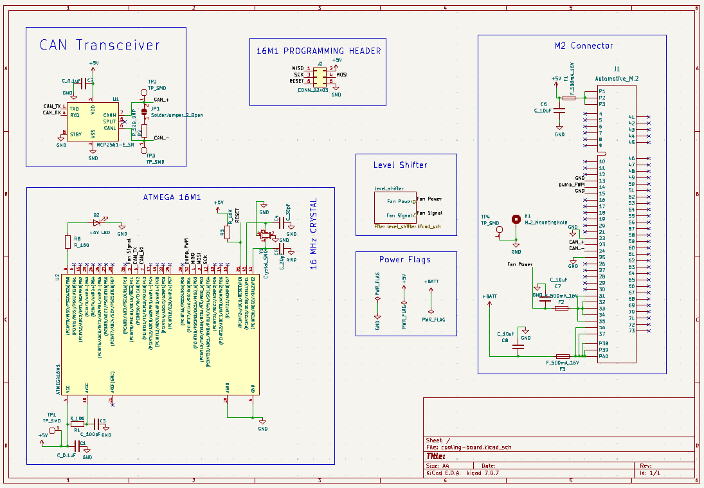

As part of the low voltage subteam on Olin Formula, I was tasked with creating a PCB to control the cooling systems for MKVII, Olin's seventh FSAE electric race car. Previously, the radiator fan, water pump, and accumulator fan were all powered continuously regardless of whether cooling was necessary or not at a given time. The cooling board manages when the radiator fan and pump are running while the battery management system controls the accumulator fan.

Block Diagram

Schematic Diagram